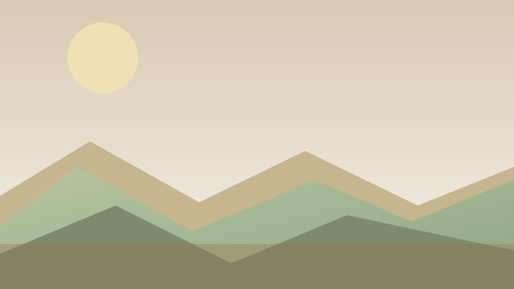

IPA Terre di Asolo e Monte Grappa
Tra colline, boschi e borghi, un territorio da vivere
Un progetto integrato per valorizzare paesaggi, cultura e comunita con una visione sostenibile e condivisa.
UNESCO
Outdoor
Mobilita dolce
Il progetto
Una rete di luoghi, persone e visioni
IPA Terre di Asolo e Monte Grappa mette in dialogo istituzioni, comunita e operatori turistici per raccontare il territorio in modo coerente e autentico.
Paesaggio UNESCO, ospitalita diffusa e mobilita lenta guidano un percorso condiviso di valorizzazione.
- Percorsi lenti e accessibili tra borghi e altopiani
- Esperienze outdoor e cultura locale per tutte le stagioni
- Servizi coordinati per una visita di qualita
Perche questo territorio
Un mosaico di colline, vigneti, foreste e panorami che unisce identita locale e visione internazionale.
Esplora
Il territorio a portata di mappa


Esperienze
Luoghi da vivere con lentezza
Sentieri panoramici
Itinerari escursionistici tra creste, malghe e punti panoramici.
Vedi i percorsi

News
Ultime dal progetto

12 Set 2024
Avviato il tavolo UNESCO per la mobilita dolce
Primi incontri con comuni e associazioni per integrare i percorsi locali.
02 Set 2024
Nuovi punti informativi per visitatori
Attivi gli info point con materiali aggiornati e mappa dei servizi.

22 Ago 2024
Calendario eventi di fine estate
Workshop, visite guidate e iniziative dedicate alle comunita locali.